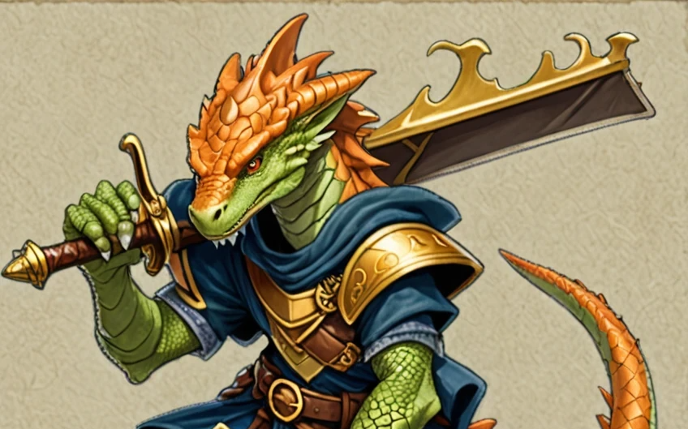
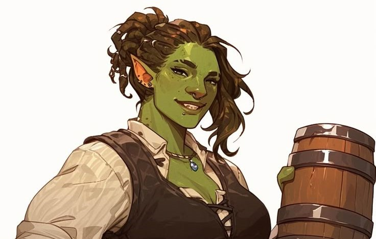
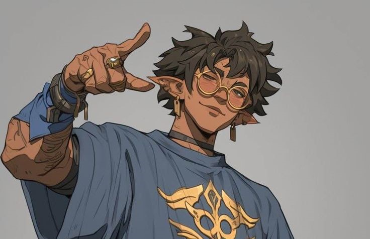
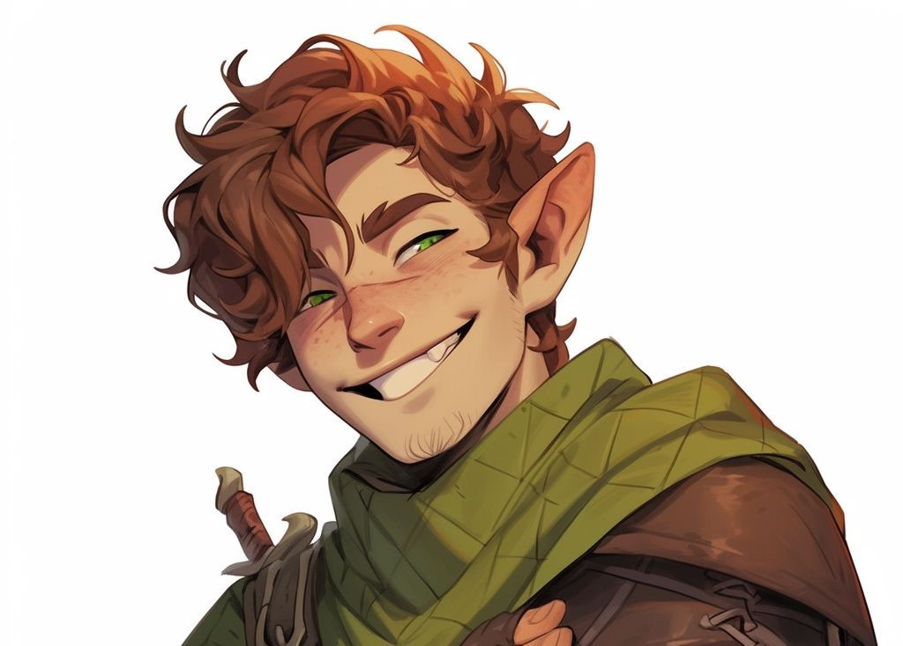
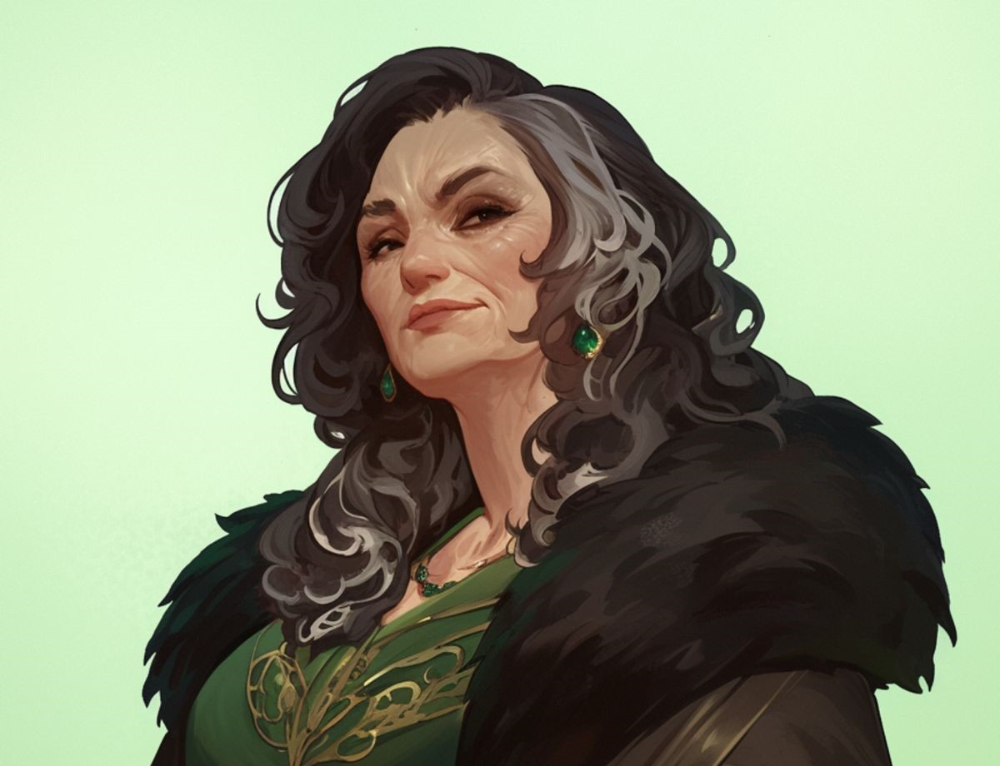

Uma guilda de médio porte, com sede em Thur Thur, conhecida por investigar "quedas" — ruínas, desastres, territórios esquecidos e locais que trazem perigo mas também segredos. Diferente de outras guildas que buscam apenas fama e tesouros, a Corte da Queda se define pela busca de conhecimento, stabilidade e descobertas úteis ao mundo.

Personalidade: Justo, meticuloso e confiável.
Função: Coordenador, mediador político e contato direto com nobres e senadores.
Líder da guilda. Uma criatura reptiliana de estatura baixa, mas de presença firme. Conhecido por sua lealdade à Corte e seu senso de dever, Zikruu tem uma voz grave e paciente. É estrategista, raramente se deixa levar por emoções. Veste sempre um manto azul com o símbolo da guilda: uma chama dourada caindo.

Personalidade: Intensa, instável, mas nunca falha quando está de guarda.
Função: Músculo da guilda, protetora nos campos de exploração.
Uma guerreira corpulenta, de temperamento explosivo. Oriana é a primeira a perder a paciência, mas carrega no cinto três canecas metálicas, pois beber cerveja é sua forma de voltar à calma. Apesar do mau humor, é leal a seus companheiros.

Personalidade: Gananciose, charmose e pragmátice.
Função: Diplomate e tesoureire da guilda.
Um elfe de cabelos claros e olhos calculistas. Para Kire, beleza e valor estão no ouro. Ele é quem negocia contratos, compras e vendas de suprimentos, sempre barganhando para que a guilda saia lucrando.

Personalidade: Bem-humorado, confiável, um pouco trapaceiro em jogos de azar.
Função: Porta-voz popular da guilda, distrai e motiva.
Um aventureiro humanoide de origem mestiça (Walshie), dono de um sorriso fácil e um humor afiado. Garrick é o carisma vivo da guilda: brinca nas horas certas, conta histórias e anima os aliados nas piores situações.

Personalidade: Misteriosa, fria, inteligente.
Função: Espiã, rastreadora e exploradora de ambientes arriscados.
Uma ladina sagaz e manipuladora, prefere agir nas sombras. Ardilosa, acredita que a informação vale mais que a força. Tem uma rede de contatos obscura e coleciona segredos, inclusive de seus companheiros.

Personalidade: Calado, calculista, um pouco excêntrico.
Função: Alquimista e estrategista de campo.
Um ser anfíbio, de pele verde-escura e olhos atentos. O mais inteligente do grupo, Thorne domina alquimia e cria poções a partir de seu próprio veneno. É o tipo que pensa três passos à frente.